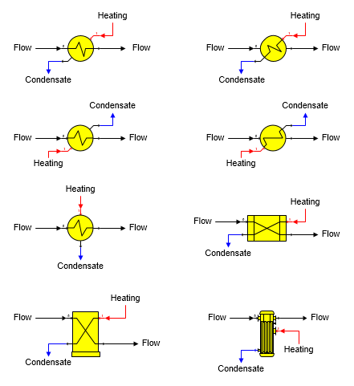

Heat Exchanger A heat exchanger station is used to transfer heat between two flow streams. Different heat exchanger shapes provided with Sugars are shown below.

General Features A heat exchanger station is used to heat a process flow stream (goes into port 0) with a heating flow stream (goes into port 1), or cool a process flow stream with a cooling flow stream. The two flow streams do not mix and only heat is transferred from one flow to the other. If either flow stream contains sucrose crystals and heating the flow causes the flow to become undersaturated, then sucrose crystals will melt until the output flow stream is at sucrose saturation. Also, vapor flashing can occur if the flow stream temperature is above the vapor saturation temperature for the pressure of the flow. To avoid flashing, a pump can be used to raise the pressure of the flow before it passes through the heat exchanger. Heat transfer calculations are done using the vapor saturation temperature of the heating flow in if it is steam and it is superheated; however, the total heat content of the steam flow in is used. Condensate Drop is considered if a value is entered with the heat loss in the condensate added to the heat transferred. Also, effectiveness is calculated using the actual temperature for the input flow instead of the vapor saturation temperature if the input flow is superheated.